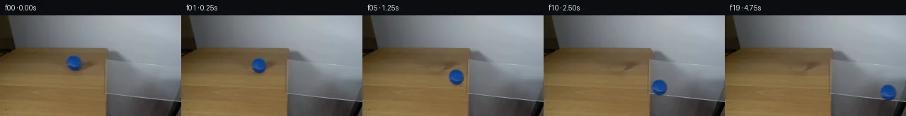

![首帧]()

Round 00
2026-11-04T20:40:26.871008+00:00像素候选变化代码 +197/−0inspection 更新
pixels 6e034511ec365249 · code 034646037cfc894c
查看本轮 generate.py 真实 diff
--- previous/generate.py +++ current/generate.py @@ -0,0 +1,197 @@ +#!/usr/bin/env python3 +"""Generate the 20-frame PixelWorld continuation using local pixel operations.""" + +from pathlib import Path + +import cv2 +import numpy as np +from PIL import Image, ImageDraw, ImageFont + +import artifact_io + + +ROOT = Path(__file__).resolve().parent +H, W = 144, 256 +SOURCE_CENTER = np.array([104.35, 67.30], dtype=np.float32) +SOURCE_RADIUS = 10.65 + + +def clean_plate(source: np.ndarray) -> np.ndarray: + """Reconstruct the small wood patch hidden by the original ball/shadow.""" + out = source.astype(np.float32).copy() + yy, xx = np.mgrid[0:H, 0:W].astype(np.float32) + dist = np.hypot(xx - SOURCE_CENTER[0], yy - SOURCE_CENTER[1]) + feather = np.clip((14.2 - dist) / 1.8, 0.0, 1.0)[..., None] + + # Grain is predominantly horizontal. For every affected scanline, infer the + # hidden colors from uncontaminated strips on both sides, preserving the + # observed left-to-right illumination gradient. + reconstruction = out.copy() + for y in range(52, 84): + left = np.median(source[y, 84:90].astype(np.float32), axis=0) + right = np.median(source[y, 126:132].astype(np.float32), axis=0) + u = np.clip((np.arange(W, dtype=np.float32) - 87.0) / 42.0, 0.0, 1.0) + row = left[None, :] * (1.0 - u[:, None]) + right[None, :] * u[:, None] + reconstruction[y] = row + out = out * (1.0 - feather) + reconstruction * feather + return np.clip(out, 0, 255).astype(np.uint8) + + +def source_sprite(source: np.ndarray, background: np.ndarray): + """Return a de-matted, premultiplied full-frame ball layer and alpha.""" + yy, xx = np.mgrid[0:H, 0:W].astype(np.float32) + dist = np.hypot(xx - SOURCE_CENTER[0], yy - SOURCE_CENTER[1]) + alpha = np.clip((11.25 - dist) / 1.15, 0.0, 1.0).astype(np.float32) + # Dematting removes the brown tabletop fringe before the sprite reaches + # gray glass. Very low-alpha values are excluded for numerical stability. + a = alpha[..., None] + denom = np.maximum(a, 0.10) + foreground = (source.astype(np.float32) - (1.0 - a) * background.astype(np.float32)) / denom + foreground = np.clip(foreground, 0, 255) + premultiplied = foreground * a + return premultiplied, alpha + + +def trajectory(): + """Screen-space rolling centers/radii, continuous at the table/glass join.""" + centers = [SOURCE_CENTER.copy()] + radii = [SOURCE_RADIUS] + for t in range(1, 20): + if t <= 8: + x = SOURCE_CENTER[0] + 5.20 * t + 0.080 * t * t + y = SOURCE_CENTER[1] + 0.730 * (x - SOURCE_CENTER[0]) + else: + u = t - 8 + x = 151.07 + 5.80 * u + 0.130 * u * u + radius = SOURCE_RADIUS + 0.040 * t + glass_y = 111.0 + 0.115 * (x - 150.0) + y = glass_y - radius + 1.0 + centers.append(np.array([x, y], dtype=np.float32)) + radii.append(SOURCE_RADIUS + 0.040 * t) + return np.asarray(centers), np.asarray(radii, dtype=np.float32) + + +def alpha_composite(frame: np.ndarray, color: np.ndarray, alpha: np.ndarray) -> np.ndarray: + a = np.clip(alpha, 0.0, 1.0)[..., None] + return frame * (1.0 - a) + color * a + + +def soft_ellipse(center, axes, sigma, opacity): + mask = np.zeros((H, W), dtype=np.float32) + cv2.ellipse( + mask, + (int(round(center[0])), int(round(center[1]))), + (max(1, int(round(axes[0]))), max(1, int(round(axes[1])))), + 0, + 0, + 360, … diff truncated; 110 more lines …